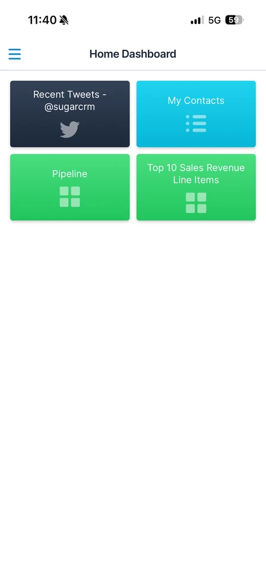
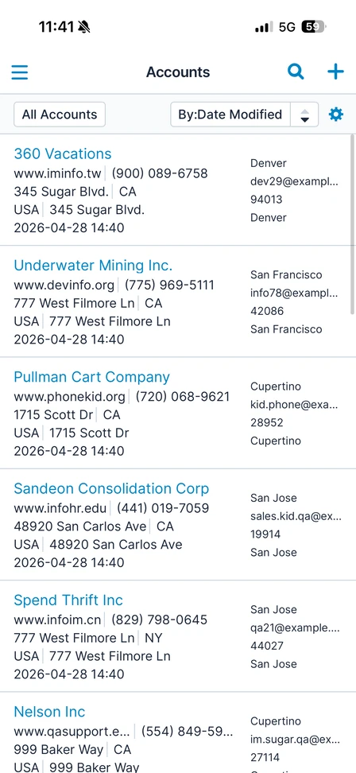
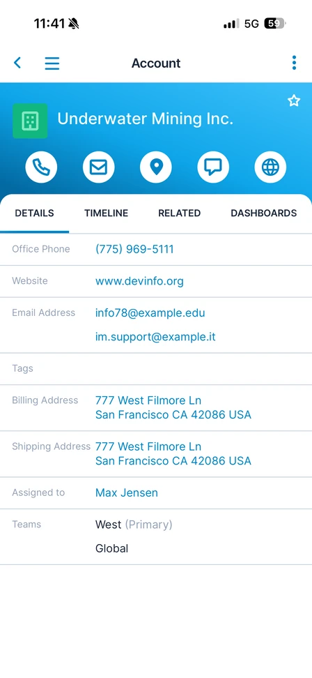
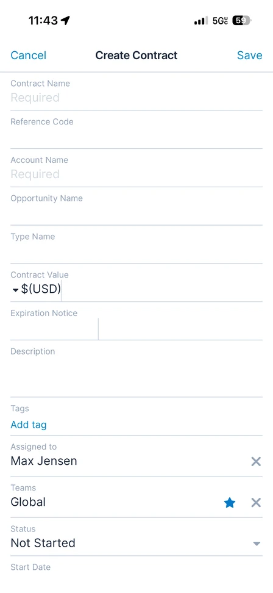
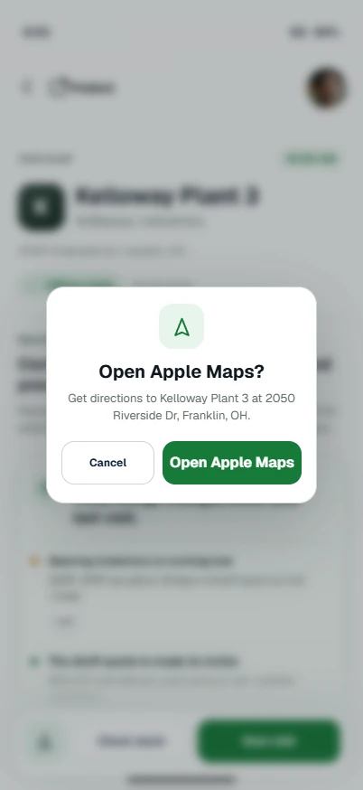
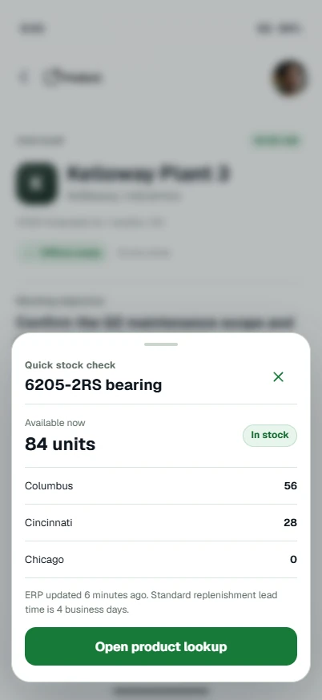
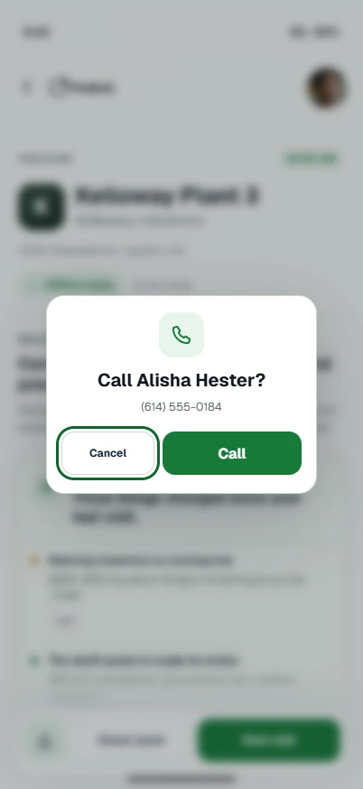
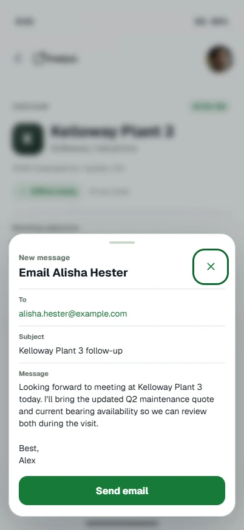

Home dashboard

SugarAI · Mobile CRM · Manufacturing field sales
Reps reported spending 90–120 minutes per customer visit getting their notes into the CRM. In a field test, two reps averaged 15 minutes per visit, dictating updates at customer job sites and syncing them to SugarAI.
The problem
Sugar mobile carried the desktop CRM onto a phone. To answer a question on the plant floor, reps had to piece together account details across dashboards, records, and forms.
To keep the conversation moving, reps kept notes in spreadsheets, emails, notepads, and on paper. Back at the office, they had to compile and type them again, often in pieces between other tasks. Some forgot, and those visits never made it into the CRM.
Home dashboard

List view

Record view

Create form

Research
I interviewed five sales reps who worked on factory floors, in warehouses, and at sites with poor connectivity. During a visit they needed practical answers about stock, pricing, equipment, and service history.
They were willing to record updates if they could keep talking to the customer.
Before the visit
During the visit
Design challenge
I used the visit as the starting point. A rep needed to know which site was next, answer questions there, and review what would go into the CRM before saving.
AI answers also needed the account, inventory, and service context that reps used to judge them.
Design decisions
A field rep does not wake up needing Accounts. In interviews, the most important task of their day was preparing for the next customer interaction: where to go, what changed, and what to do when they arrive.
Manufacturing accounts often span plants, warehouses, HQ offices, and service locations. Each site carries different contacts, risks, and work.
Messy field input becomes suggested CRM updates the rep can inspect, edit, remove, and save with confidence.
Before and after
Mobile entry took too long during visits, so reps relied on paper and entered updates back at the office.
Keep preparation, answers, capture, and review connected to the visit.
The solution
The first recording follows a complete visit. The next three show what happens when a rep needs a product, an answer about service, or a quick way to dictate a note.
Flows
Key moments
Key moments
Key moments
Key moments
Supporting actions
A customer question could prompt a stock check, a call, or a follow-up email mid-visit.
Each task sent the rep to another module, then back to the customer record.
I put those actions inside the visit so each opens with the customer’s details already in place.




Results
Two of the five sales reps I interviewed connected the working concept to their own SugarAI instances and used it at customer job sites.
They reviewed their dictated notes on site and synced the updates to their own CRM records before returning to the office. The 90–120 minute baseline is the time reps reported spending per visit to compile notes and enter them into the CRM, usually spread across the day.
Both reps wanted visits to appear in the calendar they already used. I put personal-calendar sync on the roadmap for the next release.
Voice capture let them record a visit in the car or while walking, without typing or holding a pen.
Retrospective
Reps were most enthusiastic about dictation, because it let them capture a visit in the car or while walking. With typing out of the way, reviewing the suggested updates became the main step in CRM entry.
Two reps is a small test, and the baseline is self-reported. Next, I’d measure entry time directly and track how many suggested updates reps keep, edit, or remove.
Offline mode and calendar sync were scoped for later releases, after the planned Q1 2027 launch.